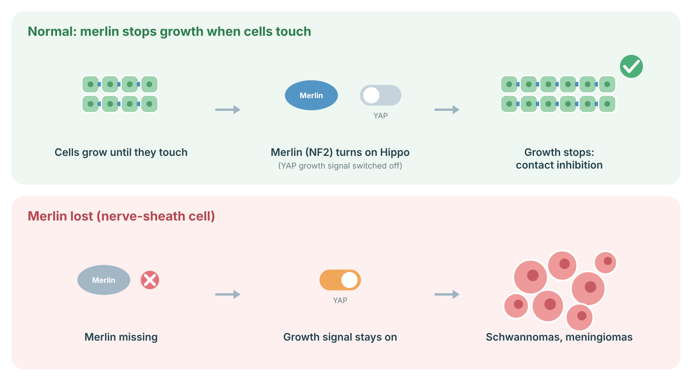

Understanding NF2
NF2-related schwannomatosis is an inherited condition that causes benign (non-cancerous) tumours of the nerves and of the lining of the brain and spine. The hallmark is a tumour on the hearing and balance nerve on both sides (bilateral vestibular schwannoma). These tumours are slow-growing but can affect hearing, balance and other nerves because of where they grow. About half of people are the first in their family, and some have a “mosaic” form, where only some cells carry the change.
Cells normally stop growing when they touch their neighbours (“contact inhibition”). Merlin, the protein made by NF2, senses this contact and switches on the Hippo pathway, which turns off a growth signal called YAP. When merlin is missing, the growth signal stays on, and nerve-sheath (Schwann) cells and meninges overgrow.
NF2: Tumours usually arise when a cell loses its second working NF2 copy.

Sources: Petrilli AM, Fernández-Valle C. Oncogene 2016;35:537–48 (PubMed).
Associated tumours
Most tumours in NF2 are benign. Cancer is rare, especially in childhood. The problems come from where the tumours grow.
| Tumour | Comment |
|---|---|
| Vestibular schwannoma (often both sides) | Hallmark feature; hearing loss, tinnitus, imbalance |
| Other schwannomas (cranial, spinal, peripheral nerves) | Can cause weakness, numbness or pain |
| Meningioma (brain or spine) | Childhood onset with meningioma predicts more severe disease |
| Other spinal cord tumours | Detected on spinal MRI |
Surveillance
Surveillance means regular checks to find tumours early, before they cause permanent damage. It is usually coordinated by a specialist NF2 team.
Management
There is no medicine that prevents NF2 tumours. Many tumours are watched with MRI. Treatment is chosen when a tumour grows or causes symptoms, with the goal of keeping hearing and nerve function for as long as possible.
Genetic counselling
Each child of a person with constitutional NF2 has a 1 in 2 chance of inheriting it. People with mosaic NF2 have a lower chance of passing it on. Testing of at-risk relatives allows those who did not inherit the change to stop surveillance.
References
- Evans DG. NF2-Related Schwannomatosis. In: GeneReviews. Seattle (WA): University of Washington. Bookshelf NBK1201; PubMed.
- Plotkin SR, et al. Updated diagnostic criteria and nomenclature for neurofibromatosis type 2 and schwannomatosis. Genet Med 2022;24:1967–77 (PubMed).
- Evans DGR, et al. Cancer and central nervous system tumor surveillance in pediatric neurofibromatosis 2 and related disorders. Clin Cancer Res 2017;23:e54–e61 (PubMed).
- Petrilli AM, Fernández-Valle C. Role of Merlin/NF2 inactivation in tumor biology. Oncogene 2016;35:537–48 (PubMed).